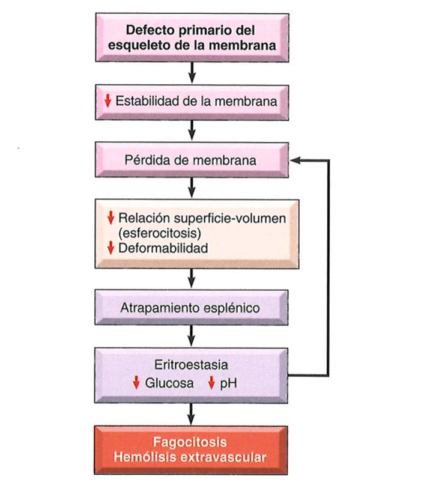
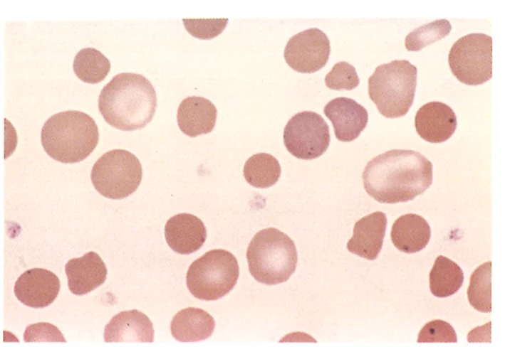
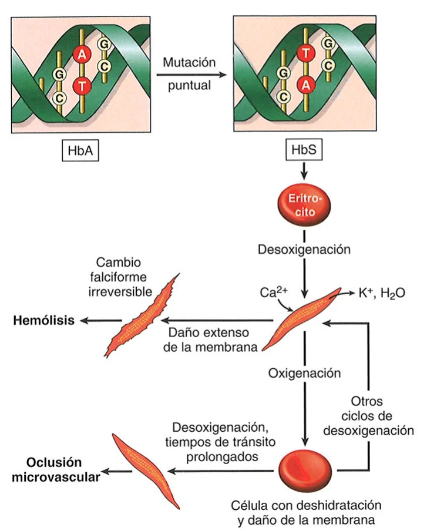
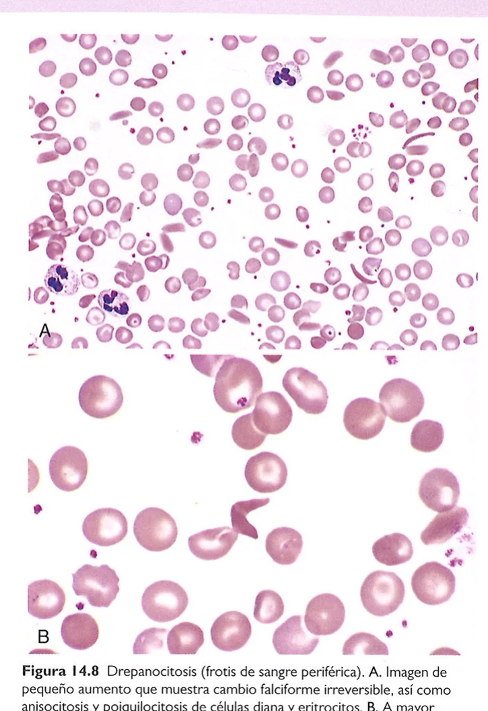
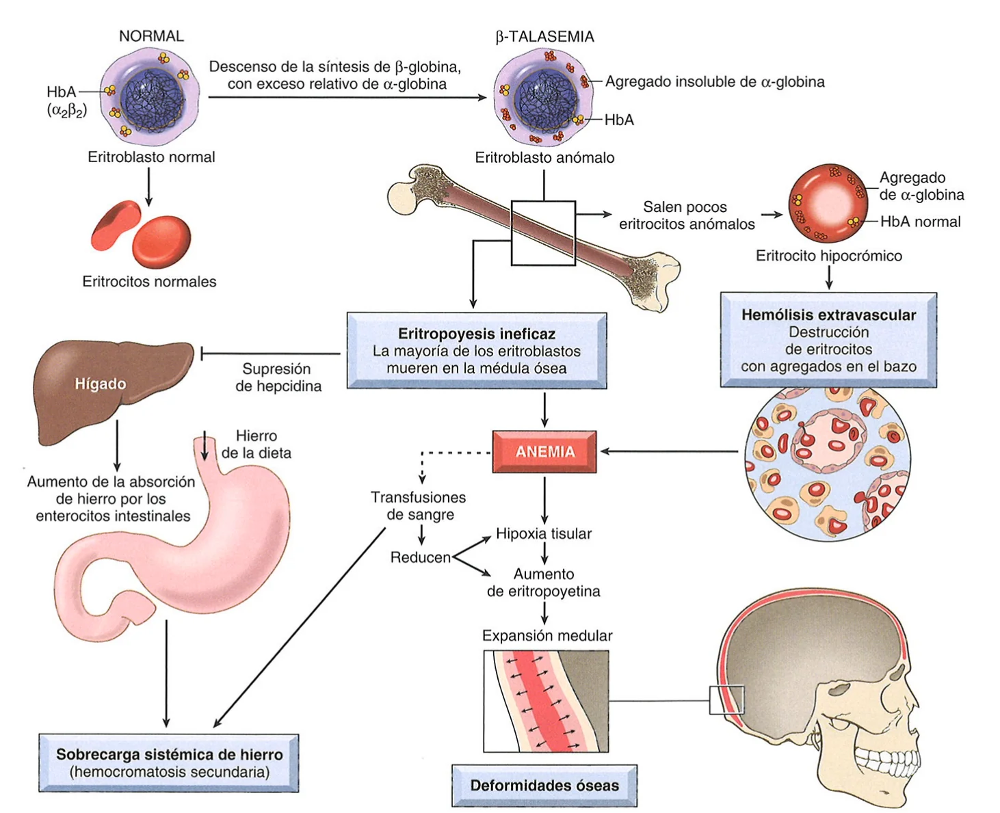
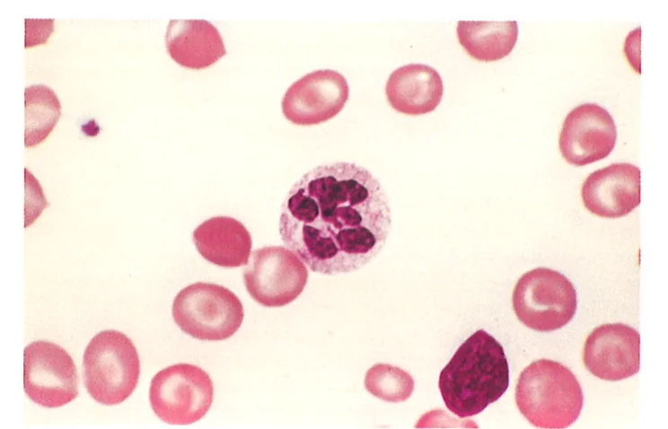
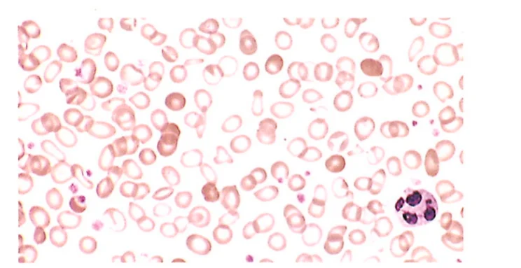
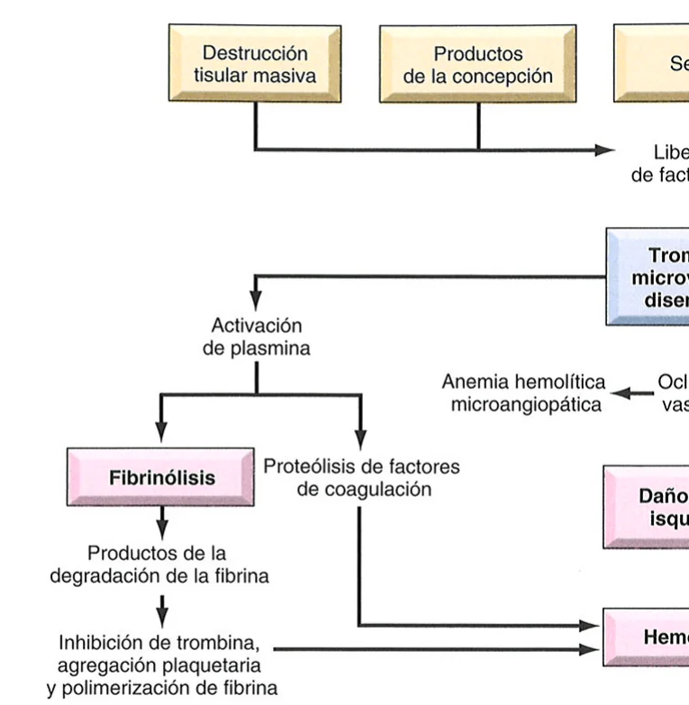

Qué cubre esta guía
Las citas p. N corresponden a la página impresa del libro. El texto se publica sin agregar contenido que no esté en el capítulo.
Lo esencial en 60 segundos
- Anemia: clasificación por mecanismo (pérdida, hemólisis, menor producción) y morfología; VCM 82-96 fl, HCM 27-33 pg, CHCM 33-37 g/dl p. 635-637.
- Hemólisis extravascular: anemia, esplenomegalia e ictericia; intravascular: hemoglobinemia, hemoglobinuria y hemosiderinuria, sin esplenomegalia p. 637.
- Drepanocitosis: Glu→Val en β-globina; HbF inhibe la polimerización (hidroxiurea, CRISPR); autoesplenectomia explica sepsis por encapsulados p. 641-644.
- Talasemias: β mayor con eritropoyesis ineficaz y hemocromatosis secundaria por eritroferrona; α con 4 genes delecionados = hidropesía fetal (Hb de Bart) p. 645-648.
- B12 vs folato: ambas elevan homocisteína, solo B12 eleva ácido metilmalónico y da neuropatía; dar folato puede agravarla p. 653-655.
- Ferropenia: ferritina <12 µg/l y TBC alta; en inflamación ferritina alta y TBC baja por hepcidina (IL-6) p. 656-659.
Ideas clave
- La anemia es la reducción de la masa total de eritrocitos circulante; en la práctica se diagnostica por hematocrito y hemoglobina bajos, salvo cambios del volumen plasmático (retención de líquidos, deshidratación) p. 635.
- Dos ejes de clasificación: por mecanismo causante (pérdida de sangre, hemólisis, descenso de producción) y por morfología: microcítica-hipocrómica = defecto de síntesis de Hb; macrocítica = maduración eritroide alterada; normocítica-normocrómica = etiologías diversas p. 635.
- Índices hematimétricos clave: VCM (82-96 fl), HCM (27-33 pg), CHCM (33-37 g/dl); en adultos la Hb normal es 13,6-17,2 g/dl (hombres) y 12,0-15,0 g/dl (mujeres), hematocrito 39-49% y 33-43% p. 637.
- Las anemias hemolíticas comparten: vida eritrocitaria <120 días, eritropoyetina elevada con reticulocitosis y acumulación de productos de degradación de la Hb p. 637. Extravascular (fagocitos esplénicos; anemia + esplenomegalia + ictericia) vs intravascular (hemoglobinemia, hemoglobinuria, hemosiderinuria, sin esplenomegalia) p. 637.
- La esferocitosis hereditaria es un defecto del esqueleto de la membrana (espectrina, anquirina, banda 3, bandas 4.1/4.2), autosómico dominante en el 75% de los casos; el esferocito rígido queda atrapado en los cordones esplénicos p. 638.
- La deficiencia de G6PD (ligada al X) impide generar NADPH y glutatión reducido; el estrés oxidativo (infecciones, primaquina, habas) forma cuerpos de Heinz y células mordidas; la hemólisis es episódica y autolimitada p. 640.
- La drepanocitosis es una mutación puntual de la β-globina (Glu→Val) que polimeriza la HbS desoxigenada; causa hemólisis, crisis vasooclusivas, autoesplenectomia y daño crónico de órganos; la HbF inhibe la polimerización (base de la hidroxiurea) p. 641.
- Las talasemias son defectos cuantitativos de la síntesis de globinas: en la β-talasemia el exceso de cadenas α precipita y produce eritropoyesis ineficaz con sobrecarga de hierro por eritroferrona; en la α-talasemia el número de genes delecionados (de 1 a 4) define el síndrome p. 644.
- La anemia megaloblástica (déficit de B12 o folato) es un defecto de la síntesis de ADN con asincronía núcleo-citoplasma, macroovalocitos, neutrófilos hipersegmentados y eritropoyesis ineficaz; solo la deficiencia de B12 añade daño neurológico p. 651.
- La anemia ferropénica es el trastorno nutricional más frecuente del mundo: microcitosis-hipocromia, ferritina <12 µg/l y saturación de transferrina <15%; en hombres adultos y posmenopáusicas debe asumirse hemorragia digestiva oculta hasta demostrar lo contrario p. 655.
- La anemia de la inflamación crónica se explica por la IL-6 → hepcidina ↑ → bloqueo de la ferroportina (hierro atrapado en macrófagos) más eritropoyetina inadecuadamente baja; ferritina alta con TBC baja la diferencia de la ferropenia p. 658-659.
- En las diátesis hemorrágicas: trombocitopenia/vWF → petequias, hemorragias de piel y mucosas, TP y TTP normales; déficit de factores → hematomas, hemartrosis y hemorragia de tejidos profundos. La CID consume a la vez plaquetas, factores y fibrinógeno p. 662-663.
Anemias
Definición y clasificación: reducción de la masa de eritrocitos; se diagnostica por hematocrito y Hb. La clasificación morfológica usa VCM, HCM, CHCM y la amplitud de la distribución eritrocítica (11,5-14,5) p. 635, 637.
Clínica general de la anemia
Palidez, debilidad, cansancio fácil y disnea de mínimos esfuerzos; la hipoxia produce cambios grasos en hígado, miocardio y riñón, puede desencadenar angina de pecho sobre una coronariopatía previa, y la hipoxia del SNC causa cefalea, visión borrosa y debilidad p. 635-636.
Anemias por pérdida de sangre
Pérdida de sangre aguda
Dominada por la pérdida de volumen intravascular: colapso cardiovascular, shock y muerte si es masiva. El líquido intersticial restituye el volumen con hemodilución; la hipoxia tisular eleva la eritropoyetina y los reticulocitos aparecen a los ~5 días, llegando al 10-15% a los 7 días. La hemorragia masiva produce leucocitosis por hormonas adrenérgicas y trombocitosis reactiva p. 636-637. El hierro se recaptura solo si la hemorragia es interna; la externa causa ferropenia p. 637.
Pérdida de sangre crónica
Anemia solo cuando la pérdida excede la capacidad regenerativa o se depletan las reservas de hierro → anemia ferropénica p. 637.
Anemias hemolíticas
Características comunes: vida eritrocitaria acortada, eritropoyetina elevada, reticulocitosis, acumulación de productos de degradación de la Hb p. 637.
Hemólisis extravascular vs intravascular
| Característica | Extravascular | Intravascular |
|---|---|---|
| Sitio de destrucción | Fagocitos (bazo, hígado, médula) | Lecho vascular (trauma, complemento, tóxicos, parásitos) |
| Cuadro | Anemia, esplenomegalia, ictericia | Anemia, hemoglobinemia, hemoglobinuria, hemosiderinuria, ictericia |
| Haptoglobina | Descenso variable | Descenso marcado (agota) |
| Esplenectomía | Beneficiosa | No indicada por hemólisis |
| Causas típicas | Membranopatías, esferocitos, opsonización IgG | Válvulas mecánicas, microangiopatías, clostridios, paludismo |
Fuente: p. 637. La hemoglobina libre se oxida a metahemoglobina marrón; el hierro puede acumularse en el túbulo proximal (hemosiderosis renal). La hiperbilirrubinemia no conjugada favorece litiasis biliar pigmentada p. 637.
Morfología común
Hiperplasia eritroide medular (normoblastos), reticulocitosis, hemosiderosis de bazo-hígado-médula, hematopoyesis extramedular si es grave y colelitiasis pigmentada en la hemólisis crónica p. 638.
Esferocitosis hereditaria
Prevalencia máxima en el norte de Europa (1:5.000); herencia autosómica dominante en el 75%; el resto son heterocigotos compuestos p. 638.
Patogenia
Mutaciones que dejan sin proteína al esqueleto de la membrana (anquirina, banda 3, espectrina α/β, bandas 4.2/4.1); la vida media cae a 10-20 días frente a los 120 normales. Los eritrocitos jóvenes son normales; al envejecer pierden fragmentos de membrana y adoptan la forma de esfera (mínima superficie/volumen); el bazo las atrapa en los cordones de Billroth y los macrófagos las fagocitan (eritroestasia, depleción de glucosa, pH bajo agravan) p. 638-639.


Morfología y clínica
Esferocitos pequeños, oscuros (hipercrómicos), sin palidez central; reticulocitosis, cuerpos de Howell-Jolly si hay asplenia; colelitiasis en el 40-50% de los adultos; esplenomegalia moderada (500-1.000 g) p. 639. Diagnóstico: historia familiar + sensibilidad a la lisis osmótica (2/3 de los casos) + CHCM elevada por deshidratación p. 639. Evolución salpicada por crisis aplásicas (parvovirus B19, 1-2 semanas) y crisis hemolíticas (p. ej., mononucleosis infecciosa). La esplenectomía corrige la anemia pero aumenta el riesgo de sepsis bacteriana p. 640.


Deficiencia de glucosa-6-fosfato deshidrogenasa (G6PD)
Rasgo recesivo ligado al X; la G6PD genera NADPH → glutatión reducido, defensa frente al H₂O₂ oxidante p. 640. Variantes clínicamente significativas: G6PD A⁻ (10% de los negros americanos) y G6PD mediterránea (más grave); su frecuencia alta se explica por protección frente al paludismo por P. falciparum p. 640. Como los eritrocitos maduros no sintetizan proteínas, los eritrocitos viejos son los más vulnerables: la hemólisis es episódica y autolimitada p. 640.
Desencadenantes: infecciones (hepatitis vírica, neumonía, fiebre tifoidea), fármacos oxidantes (primaquina, cloroquina, sulfonamidas, nitrofurantoína) y habas (fabismo) p. 640. Los oxidantes precipitan la globina en cuerpos de Heinz; los macrófagos esplénicos los arrancan formando células mordidas y esferocitos p. 640. La hemólisis aguda (intravascular + extravascular) comienza 2-3 días después de la exposición y cesa cuando solo quedan eritrocitos jóvenes; reticulocitosis anuncia la recuperación. Por ser episódica, no hay esplenomegalia ni colelitiasis crónica p. 640.
Enfermedad de células falciformes (drepanocitosis)
Patogenia
Mutación sin sentido en el gen de la β-globina: glutamato → valina (HbS). El 8-10% de los afroamericanos es heterocigoto (rasgo falciforme, asintomático); el homocigoto desarrolla la enfermedad (70.000-100.000 personas en EE. UU.) p. 641. La HbS desoxigenada polimeriza en fibras que distorsionan el eritrocito. Factores que modulan la falciformación p. 641-642:
- Otros tipos de Hb: HbA (40% en HbAS) y sobre todo HbF inhiben la polimerización; los lactantes son sintomáticos solo desde los 5-6 meses, cuando cae la HbF. La persistencia hereditaria de HbF da enfermedad leve. La HbC (enfermedad HbSC, 50% de HbS + deshidratación) da un cuadro algo más leve que la SS.
- CHCM: la deshidratación intracelular facilita la falciformación; la α-talasemia coexistente la atenúa.
- pH intracelular: la acidosis reduce la afinidad por el O₂ y agrava.
- Tiempo de tránsito microvascular: los lechos lentos (bazo, médula ósea, tejidos inflamados) son los que se ocluyen.
Los ciclos repetidos de falciformación dañan la membrana (entrada de Ca²⁺, salida de K⁺ y H₂O), produciendo células falciformes irreversibles, cuya proporción se correlaciona con la hemólisis. La hemoglobina libre consume óxido nítrico, lo que favorece vasoconstricción y estasis p. 642.


Morfología
Frotis: falciformes irreversibles, reticulocitosis, dianocitos y cuerpos de Howell-Jolly por asplenia. Médula hiperplásica con reabsorción ósea y aspecto radiológico de "corte de pelo militar". En la primera infancia el bazo crece hasta ~500 g por congestión; después la eritroestasia produce infarto, fibrosis y autoesplenectomia (masa fibrosa atrófica en la adolescencia/adultez). Infartos en huesos, cerebro, riñón, hígado, retina y pulmón (corazón pulmonar); úlceras de pierna en adultos p. 642-643.


Clínica y pronóstico
Anemia hemolítica moderada (hematocrito 18-30%) con reticulocitosis e hiperbilirrubinemia p. 643. Crisis:
| Crisis | Mecanismo | Notas |
|---|---|---|
| Vasooclusiva (dolor) | Infarto hipóxico por oclusión | Huesos, pulmón, hígado, cerebro, bazo, pene; síndrome mano-pie (dactilitis) en niños; puede confundirse con osteomielitis |
| Torácica aguda | Falciformación en lechos pulmonares inflamados | Fiebre, tos, dolor torácico, infiltrados; potencialmente mortal |
| Secuestro | Atrapamiento masivo esplénico (niños) | Hipovolemia y shock; requiere transfusión de intercambio |
| Aplásica | Parvovirus B19 en progenitores eritroides | Empeoramiento brusco, 1-2 semanas |
Fuente: p. 643-644. Priapismo hasta en el 45% de los hombres tras la pubertad; ACV y retinopatía por oclusión vascular p. 644. Infecciones por microorganismos encapsulados (S. pneumoniae, H. influenzae) por autoesplenectomia; vacunación y profilaxis antibiótica p. 644. Pronóstico mejorado: 90% sobrevive a los 20 años, ~50% sobrepasa la quinta década p. 644. Tratamiento: hidroxiurea (aumenta HbF y es antiinflamatoria), L-glutamina, trasplante de células madre y edición génica (CRISPR) para reinducir HbF p. 644.
Talasemias
Mutaciones de la línea germinal que reducen la síntesis de α- o β-globina: anemia por déficit de Hb y por exceso de la cadena opuesta. Los dos genes α están en el cromosoma 16 y el gen β en el cromosoma 11; endémica en el Mediterráneo, Oriente Medio, África tropical e India; frecuencia sostenida por protección palúdica p. 644.
β-talasemia
Mutaciones (más de 100, casi todas puntuales) en dos categorías: β⁰ (sin síntesis) y β⁺ (síntesis reducida) p. 644-645:
- Mutaciones de corte y empalme: causa más frecuente de β⁺ (sitios de corte ectópicos).
- Mutaciones del promotor: reducen la transcripción en 75-80% (β⁺).
- Mutaciones de terminación de cadena (sin sentido, corrimientos del marco): causa más frecuente de β⁰.
El exceso de cadenas α sin pareja precipita en inclusiones insolubles que dañan la membrana: en la β-talasemia grave, el 70-85% de los precursores muere por apoptosis (eritropoyesis ineficaz), y los eritrocitos que salen se hemolizan en el bazo p. 645. La eritropoyesis ineficaz libera eritroferrona, que suprime la hepcidina → absorción aumentada de hierro + transfusiones → hemocromatosis secundaria (corazón, hígado, páncreas) p. 646.


| Fenotipo | Genotipo | Clínica |
|---|---|---|
| β-talasemia mayor | β⁰/β⁰, β⁺/β⁺, β⁰/β⁺ | Anemia grave con dependencia transfusional |
| β-talasemia intermedia | β⁺/β⁺, β⁰/β⁺, variantes | Anemia moderada, sin transfusiones periódicas |
| β-talasemia menor | β⁰/β, β⁺/β | Asintomática o anemia microcítica leve |
Fuente: p. 646. β-talasemia mayor: anemia desde los 6-9 meses (cambio HbF→HbA); no transfundidos, Hb de 3-6 g/dl, HbF elevada. Frotis: anisocitosis, poiquilocitosis, microcitosis, hipocromia, células diana, punteado basófilo; reticulocitos menos elevados de lo esperado por eritropoyesis ineficaz; normoblastos circulantes p. 647. Deformidades óseas (pómulos, cráneo en corte de pelo militar), esplenomegalia hasta 1.500 g, hepatoesplenomegalia por hematopoyesis extramedular. La enfermedad cardíaca por sobrecarga de hierro es la principal causa de muerte; quelación obligada. Con transfusiones + quelación se llega a la tercera década; el trasplante de células madre es el único tratamiento curativo p. 647. β-talasemia menor: asintomática; frotis con hipocromia, microcitosis, punteado basófilo y células diana; HbA2 elevada al 4-8% (normal 2,5 ± 0,3%), clave para no confundir con ferropenia (hierro sérico, TBC y ferritina normales) p. 647.
α-talasemia
Cuatro genes α; cada uno aporta 25% de la cadena α. Causa más frecuente: deleciones génicas. El exceso de cadenas γ forma tetrámeros γ4 (Hb de Bart) en el recién nacido y el exceso de β forma β4 (HbH) en el adulto; ambos son solubles y estables, por lo que la hemólisis y la eritropoyesis ineficaz son menores que en la β-talasemia p. 647-648.
| Nº genes delecionados | Síndrome | Característica |
|---|---|---|
| 1 | Portador silente | Microcitosis leve, asintomático |
| 2 | Rasgo α-talasémico | Como β-talasemia menor; –/αα frecuente en asiáticos, –α/–α en africanos |
| 3 | Enfermedad HbH | Anemia moderada tipo β-talasemia intermedia; HbH de altísima afinidad por O₂ y con tendencia a oxidarse y precipitar |
| 4 | Hidropesía fetal | Tetrámeros γ4 (Hb de Bart); muerte intraútero o al parto; hoy salvables con transfusiones intraútero, dependencia transfusional de por vida |
Fuente: p. 646, 648.
Hemoglobinuria paroxística nocturna (HPN)
Única anemia hemolítica por defecto genético adquirido: mutaciones somáticas de PIGA (ligado al X), necesarias para sintetizar el anclaje glucosilfosfatidilinositol (GPI) de las proteínas reguladoras del complemento. Incidencia 2-5 por millón en EE. UU. p. 648. Faltan CD55 (factor acelerador de la descomposición), CD59 (inhibidor de la convertasa C3, el más importante) y la proteína de unión al C8; el eritrocito queda indefenso frente al complejo de ataque a la membrana C5b-C9 → hemólisis intravascular p. 648. La hemólisis nocturna clásica (por descenso del pH durante el sueño) solo aparece en el 25% de los casos; lo habitual es hemólisis crónica p. 648. La hemosiderinuria causa ferropenia sobreañadida. La trombosis es la principal causa de muerte (40% con trombosis venosas: hepática, porta, cerebrales) p. 648. El 5-10% evoluciona a leucemia mieloide aguda o síndrome mielodisplásico p. 649. Diagnóstico por citometría de flujo (población CD55⁻/CD59⁻). Tratamiento: eculizumab (anti-C5; reduce hemólisis y riesgo trombótico en >90%, con riesgo de infección meningocócica); único curativo: trasplante de células madre p. 649.
Anemia hemolítica inmunitaria
Anticuerpos contra eritrocitos propios o modificados por fármacos; diagnóstico por prueba de Coombs directa (antiglobulina que aglutina eritrocitos recubiertos de Ig/complemento) p. 649.
| Tipo | Anticuerpo | Frecuencia | Mecanismo |
|---|---|---|---|
| Anticuerpos calientes | IgG (activos a 37 °C) | ~80% de los casos | Opsonización → hemólisis extravascular (esferocitos por pérdida de membrana); antígenos Rh |
| Crioaglutininas | IgM (activos <37 °C, óptimo 0-4 °C) | 15-20% | Fijan complemento en frío; la IgM se libera y queda C3b sublítico → hemólisis extravascular; acrocianosis, Raynaud |
| Hemolisina fría | IgG anti-antígeno P | Rara; niños postvíricos | Fijan complemento al recalentar → hemoglobinuria paroxística a frigore, hemólisis intravascular a veces mortal |
Fuente: p. 649-650. Calientes: 50% idiopáticas, resto secundarias a LES, fármacos y neoplasias linfoides. Fármacos por dos mecanismos: hapteno antigénico (penicilina, cefalosporinas; 1-2 semanas de tratamiento) y rotura de tolerancia (α-metildopa: 10% de Coombs+, solo 1% con hemólisis) p. 649-650. Crioaglutininas transitorias: Mycoplasma pneumoniae, VEB, CMV, gripe, VIH; crónicas: neoplasias linfoides o idiopáticas. Tratamiento de calientes: retirar fármaco, inmunodepresores, esplenectomía p. 650.
Anemia hemolítica por traumatismo eritrocitario
Prótesis valvulares mecánicas (cizallamiento) y anemia hemolítica microangiopática: CID, PTT, SHU, hipertensión maligna, LES y cáncer diseminado; los trombos estrechan la luz y fragmentan los eritrocitos → esquistocitos, equinocitos y fragmentos triangulares en el frotis p. 650.
Anemia megaloblástica
Denominador común: alteración de la síntesis de ADN → eritropoyesis ineficaz y precursores gigantes. Causas: déficit de B12 (anemia perniciosa, gastrectomía, resección ileal, Diphyllobothrium, sobrecrecimiento bacteriano, vegetarianismo estricto) y de folato (ingesta baja, alcoholismo, embarazo, infancia, cáncer diseminado, esprúe, fenitoína y anticonceptivos orales, metotrexato) p. 651.
Morfología
Sangre: macroovalocitos, anisocitosis y poiquilocitosis, reticulocitopenia, neutrófilos hipersegmentados (≥5 lóbulos). Médula hipercelular con megaloblastos: cromatina nuclear inmadura y abierta con citoplasma ya hemoglobinizado (asincronía núcleo-citoplasma); cayados y metamielocitos gigantes; megacariocitos aberrantes. La mayoría de los precursores apoptosan → pancitopenia p. 651-652.


Anemia perniciosa (déficit de B12)
Gastritis autoinmunitaria del fondo con pérdida de células parietales → falta de factor intrínseco. Metabolismo: la B12 se libera de las proteínas alimentarias por pepsina, se une a la haptocorrina salival, se libera por proteasas pancreáticas en el duodeno, se une al factor intrínseco y se absorbe en el íleon por el receptor cubilina; viaja en plasma con la transcobalamina II p. 652-653. Funciones bioquímicas (solo dos): (1) metilcobalamina como cofactor de la metionina sintasa (homocisteína→metionina, regenera FH4 desde N5-metil-FH4, imprescindible para dUMP→dTMP); (2) adenosilcobalamina en la metilmalonil-CoA mutasa (metilmalonil-CoA→succinil-CoA); su bloqueo eleva el ácido metilmalónico, posible sustrato de la degeneración mielínica p. 653.
Enfermedad de adultos mayores (mediana 60 años). Tres autoanticuerpos: tipo I (75% de los casos; bloquean la unión B12-factor intrínseco), tipo II (impiden la unión del complejo) y tipo III (85-90%; anti-bomba de protones de la célula parietal, inespecífico, presente hasta en 50% de ancianos con gastritis idiopática) p. 653. La lesión mucosa la inician linfocitos T autorreactivos; asociada a tiroiditis y suprarrenalitis autoinmunitarias p. 654. Morfología gástrica: gastritis atrófica del fondo, aclorhidria, metaplasia intestinal, glositis atrófica ("lengua de ternera"); degeneración combinada subaguda de la médula (tractos dorsal y lateral: paraparesia espástica, ataxia sensorial, parestesias) p. 654. Diagnóstico: megaloblastosis + leucopenia con granulocitos hipersegmentados + B12 baja + homocisteína y metilmalónico elevados; anticuerpos anti-factor intrínseco muy específicos; respuesta reticulocitaria a los 5 días de B12 parenteral. Mayor riesgo de carcinoma gástrico (no revierte con B12) p. 654.
Anemia por deficiencia de folatos
Mismo cuadro morfológico que la deficiencia de B12. El FH4 dona fragmentos de un carbono para purinas, dTMP y la conversión de homocisteína en metionina; el dTMP es lo crítico para el ADN. Reservas corporales modestas: la deficiencia aparece en semanas-meses; la cocción destruye hasta el 95% de los folatos de los vegetales p. 654-655. Absorción en yeyuno proximal como 5-metiltetrahidrofolato. Causas: ingesta baja (alcohólicos, indigencia, ancianos), malabsorción (esprúe, linfoma, fenitoína), aumento de demandas (embarazo, infancia, anemia hemolítica crónica, cáncer) y metotrexato (inhibe la dihidrofolato reductasa) p. 655. Laboratorio: folato sérico/eritrocitario bajo, homocisteína alta, metilmalónico NORMAL y sin síntomas neurológicos; tratar con folato la deficiencia de B12 corrige la anemia pero puede agravar la neuropatía: descartar B12 antes de suplementar p. 655.
Anemia ferropénica
El trastorno nutricional más frecuente del mundo p. 655. Metabolismo del hierro: contenido corporal 2,5 g en mujeres y hasta 6 g en hombres; 80% del hierro funcional está en la hemoglobina; las reservas (ferritina/hemosiderina, hígado y macrófagos) son el 15-20% p. 655. La transferrina transporta el hierro (saturada en un tercio; hierro sérico ~120 µg/dl hombres, 100 µg/dl mujeres); la ferritina sérica refleja las reservas: <12 µg/l en la ferropenia, hasta ~5.000 µg/l en sobrecarga p. 656. Absorción duodenal: Fe³⁺ se reduce a Fe²⁺ (citocromo b duodenal, STEAP3) → DMT1 apical → ferroportina basolateral con oxidación por hefaestina/ceruloplasmina → unión a transferrina. La hepcidina hepática se une a la ferroportina y la degrada: hierro alto o inflamación → hepcidina alta → hierro atrapado; reservas bajas → hepcidina baja → absorción libre. Mutaciones que inactivan TMPRSS6 producen una anemia microcítica refractaria por hepcidina alta p. 656-657.
| Característica | Ferropenia | Inflamación crónica |
|---|---|---|
| Hierro sérico | Bajo | Bajo |
| Ferritina sérica | Baja (<12 µg/l) | Alta |
| TBC (transferrina) | Aumentada | Disminuida |
| Depósitos macrofágicos medulares | Ausentes | Abundantes |
| Hepcidina | Baja | Alta (IL-6) |
Fuente: p. 656-659.
Etiología
- Ingesta insuficiente (lactantes , la leche materna aporta solo 0,3 mg/l, pobreza, ancianos, adolescentes); 2. absorción alterada (esprúe, esteatorrea, gastrectomía); 3. demandas aumentadas (crecimiento, embarazo); 4. pérdida de sangre crónica: la causa más frecuente en países de ingresos altos. En hombres adultos y posmenopáusicas, la ferropenia debe atribuirse a hemorragia digestiva oculta hasta demostrar lo contrario (riesgo de pasar por alto un cáncer) p. 657-658. Para balancear se deben absorber ~1 mg/día; solo se absorbe el 10-15% del hierro ingerido (20% del hemo frente a 1-2% del no hemo) p. 657.
Patogenia, morfología y clínica
Secuencia: se agotan las reservas → cae el hierro sérico y la saturación → aparece la anemia solo cuando las reservas están completamente agotadas p. 658. Frotis: microcitosis, hipocromia (palidez central mayor de un tercio del diámetro) y células lápiz; en la médula, ausencia de hierro teñible (azul de Prusia) p. 658. Clínica: ferropenia grave de larga evolución → coiloniquia, alopecia, atrofia de lengua y mucosa gástrica, malabsorción, pica y movimientos periódicos de las extremidades durante el sueño; síndrome de Plummer-Vinson (membranas esofágicas + anemia microcítica-hipocrómica + glositis atrófica) p. 658. Laboratorio: hierro y ferritina bajos, TBC alta, saturación de transferrina <15%, hepcidina baja. Con hierro oral, reticulocitosis a los 5-7 días p. 658.


Anemia de la inflamación crónica
Frecuente en pacientes hospitalizados. Enfermedades asociadas: infecciones crónicas (osteomielitis, endocarditis, abscesos pulmonares), trastornos inmunitarios (artritis reumatoide, EII) y neoplasias (pulmón, mama, Hodgkin) p. 658. Patogenia: la IL-6 aumenta la hepcidina hepática → bloqueo de la ferroportina de los macrófagos (hierro inutilizable) + eritropoyetina inadecuadamente baja (supresión por citocinas). El secuestro de hierro sería un mecanismo de defensa (bacterias que requieren hierro); la hepcidina se estructura junto con las defensinas p. 658-659. Anemia leve, normocítica-normocrómica o microcítica-hipocrómica; la ferritina alta con TBC baja y depósitos macrofágicos conservados la separan de la ferropenia. Se trata la enfermedad de base; eritropoyetina útil en algunos pacientes con cáncer p. 659.
Anemia aplásica
Fracaso hematopoyético primario crónico con pancitopenia (anemia, neutropenia, trombocitopenia). Causas: fármacos dosis-dependientes (quimioterápicos, benceno), reacciones idiosincrásicas (cloranfenicol, sales de oro, fenilbutazona, carbamacepina), radiación corporal total, infecciones víricas (hepatitis vírica ~5% de los casos, CMV, VEB, varicela-zóster) y hereditarias (anemia de Fanconi, defectos de la telomerasa en el 5-10% de las formas del adulto); 65% son idiopáticas p. 659. Telómeros anormalmente cortos en hasta la mitad de los casos p. 659.
Patogenia: modelo dominante de supresión inmunitaria de las células madre: linfocitos Th1 activados producen IFN-γ y TNF que suprimen y matan progenitores; apoyo clínico: globulina antitimocitos y ciclosporina responden en el 60-70%. Modelo alternativo/incluyente: anomalía intrínseca de la célula madre (aberraciones cariotípicas, transformación a SMD/LMA, telómeros cortos) p. 659-660. Morfología: médula intensamente hipocelular, casi solo adipocitos y estroma; aspirado "punción seca"; la biopsia medular es el estudio diagnóstico p. 660. Clínica: inicio insidioso, pancitopenia, esplenomegalia ausente (su presencia hace dudar del diagnóstico), eritrocitos levemente macrocíticos y reticulocitopenia. Diagnóstico diferencial: leucemia aleucémica y síndrome mielodisplásico, ambos con médula hipercelular p. 661. Pronóstico: trasplante de células madre con supervivencia a 5 años >75% con donante; inmunodepresores en mayores o sin donante p. 661.
Aplasia eritrocítica pura
Solo se suprimen los progenitores eritroides. Formas: aguda (parvovirus B19 → crisis aplásica en anemias hemolíticas; persistente en inmunodeprimidos) y crónica, generalmente autoinmunitaria, asociada a timoma y leucemia linfocítica de gránulos grandes, fármacos y anticuerpos anti-eritropoyetina. Con timoma, la resección mejora a la mitad de los pacientes p. 661.
Otras formas de fracaso medular
- Anemia mieloptísica: ocupación de la médula por cáncer metastásico (mama, pulmón, próstata) o proceso infiltrante; leucoeritroblastosis y eritrocitos en forma de lágrima p. 661.
- Insuficiencia renal crónica: anemia proporcional a la uremia por falta de eritropoyetina; la uremia también acorta la vida eritrocitaria y daña la función plaquetaria; responde a eritropoyetina recombinante + hierro p. 661.
- Enfermedad hepatocelular: anemia levemente macrocítica por incorporación de colesterol y fosfolípidos a la membrana p. 661.
- Hipotiroidismo: anemia normocítica-normocrómica leve p. 661.
Policitemia
Aumento del número de eritrocitos. Relativa (hemoconcentración: deshidratación, diuréticos, policitemia de estrés o síndrome de Gaisböck: hombres hipertensos, obesos y "estresados") vs absoluta (aumento real de la masa eritrocitaria) p. 662.
| Tipo | Eritropoyetina | Causas |
|---|---|---|
| Primaria | Baja | Policitemia vera (neoplasia mieloproliferativa); mutaciones familiares del receptor de eritropoyetina (raro) |
| Secundaria | Alta | Compensatoria: hipoxia (gran altitud, neumopatía, cardiopatía cianótica). Paraneoplásica: tumores secretores de eritropoyetina (carcinoma de células renales, hepatocarcinoma, hemangioblastoma cerebeloso). Defectos que estabilizan HIF-1: policitemia de Chuvash (VHL), mutaciones de prolil-hidroxilasa |
Fuente: p. 662.
Trastornos hemorrágicos: diátesis hemorrágicas
Causas: fragilidad vascular, defecto plaquetario o defecto de la coagulación p. 662.
Evaluación de laboratorio
- TP: vías extrínseca y común; prolongado en déficit de V, VII, X, protrombina o fibrinógeno.
- TTPa: vías intrínseca y común; prolongado en déficit de V, VIII, IX, X, XI, XII, protrombina, fibrinógeno o por anticuerpos antifosfolípidos.
- Recuento de plaquetas: referencia 150-350 × 10³/µl; confirmar trombocitopenias con frotis (aglutinación = pseudo-trombocitopenia).
- Pruebas plaquetarias: agregación con agonistas, cuantificación/función de vWF (aglutinación con ristocetina). El tiempo de hemorragia ha caído en desuso.
Fuente: p. 662-663.
Trastornos por anomalías de las paredes vasculares
Petequias y púrpura de piel y mucosas con recuentos y pruebas de coagulación normales. Causas: infecciones (meningococemia, septicemia, endocarditis, rickettsiosis), vasculitis por hipersensibilidad a fármacos, defectos de colágeno (escorbuto, síndrome de Ehlers-Danlos), fragilidad vascular adquirida (púrpura senil, síndrome de Cushing), púrpura de Schönlein-Henoch, telangiectasia hemorrágica hereditaria (Rendu-Weber-Osler) , autosómica dominante, genes del TGF-β, epistaxis y hemorragias digestivas, la de hemorragias más graves , y amiloidosis AL perivascular p. 663.
Trombocitopenia
<150.000/µl; entre 20.000-50.000/µl agrava la hemorragia postraumática; <20.000/µl → hemorragias espontáneas; con trombocitopenia aislada el TP y TTP son normales. Hemorragias de pequeños vasos: piel, mucosas digestivas y genitourinarias; el riesgo mayor es la hemorragia intracraneal p. 663. Cuatro mecanismos: descenso de producción, menor supervivencia (inmunitaria o no), secuestro esplénico (30-35% normal; hasta 80-90% en esplenomegalia) y dilución por transfusiones masivas p. 663-664.
Púrpura trombocitopénica inmunitaria (PTI) crónica
Autoanticuerpos, en general IgG contra glucoproteínas IIb-IIIa o Ib-IX (demostrables en el 80% de los casos), que opsonizan las plaquetas para los fagocitos del bazo; algunos también dañan los megacariocitos. Secundaria a LES, VIH y neoplasias linfoides B; el resto primarias p. 664. Morfología: megatrombocitos en sangre; médula con megacariocitos aumentados e inmaduros (trombopoyesis acelerada) p. 664. Clínica: mujeres adultas <40 años, M:H 3:1; petequias en zonas dependientes, equimosis, epistaxis, gingivorragia, menorragia; la esplenomegalia y las linfoadenopatías no existen en la forma primaria p. 664. Diagnóstico de exclusión (las pruebas de autoanticuerpos tienen baja sensibilidad/especificidad); TP y TTP normales. Tratamiento: glucocorticoides (inhiben la fagocitosis); seguimiento si plaquetas >30.000/µl; esplenectomía normaliza el recuento en ~2/3; inmunoglobulina IV, rituximab (anti-CD20) y TPO-miméticos en refractarios p. 664-665.
PTI aguda
Niños, ambos sexos, 1-2 semanas después de una virosis; autolimitada, se resuelve antes de 6 meses; en el 20% (los sin pródromo vírico) se cronifica p. 665.
Trombocitopenia medicamentosa
Quinina, quinidina y vancomicina (anticuerpos dependientes de fármaco); anti-GpIIb/IIIa (epítopo neoformado). Trombocitopenia inducida por heparina (TIH): tipo I, rápida y leve (efecto agregante directo); tipo II, a los 5-14 días, por anticuerpos contra complejos heparina-factor plaquetario 4 (PF4): activación plaquetaria con trombosis paradójica (arterial y venosa); obliga a suspender la heparina (incluidas las de bajo peso molecular) y usar otro anticoagulante p. 665.
Trombocitopenia asociada al VIH
Producción disminuida (los megacariocitos expresan CD4 y CXCR4 y se infectan, con apoptosis) más destrucción inmunitaria (autoanticuerpos anti-GpIIb-IIIa y complejos inmunitarios) p. 665.
Microangiopatías trombóticas: PTT y SHU
Trombos plaquetarios en la microcirculación → anemia hemolítica microangiopática, disfunción de órganos y trombocitopenia por consumo; a diferencia de la CID, el TP y el TTP suelen ser normales p. 665-666.
| Característica | PTT | SHU típico | SHU atípico |
|---|---|---|---|
| Mecanismo | Déficit de ADAMTS13 (metaloproteasa del vWF) → acumulación de multímeros de vWF de muy alto peso → activación espontánea plaquetaria | Toxina Shiga de E. coli O157:H7 lesiona el endotelio | Déficit de reguladores de la vía alternativa del complemento (factor H, CD46/MCP, factor I) |
| Base | Hereditaria (rara, inicio en adolescencia) o adquirida (autoanticuerpos) | Diarrea sanguinolenta previa; niños y ancianos | Hereditaria o autoanticuerpos; evolución remitente-recidivante |
| ADAMTS13 | Baja | Normal | Normal |
| Tratamiento | Plasmaféresis (>80% de éxito, antes mortal) | Soporte; puede dejar daño renal permanente | Anti-C5 (eculizumab), inmunodepresores |
Fuente: p. 666. El quinteto clásico de la PTT: fiebre, trombocitopenia, anemia hemolítica microangiopática, defectos neurológicos transitorios e insuficiencia renal; el SHU se distingue por predominio renal y ausencia de síntomas neurológicos, pero hoy se difuminan p. 665. Otras asociaciones: ciclosporina, quimioterápicos, radiación, trasplante medular, VIH, sepsis neumocócica, LES, neoplasias linfoides p. 666.
Defectos cualitativos de la función plaquetaria
Hereditarios, con recuento normal: síndrome de Bernard-Soulier (autosómico recesivo, déficit de GpIb-IX, defecto de adhesión al vWF); trombastenia de Glanzmann (autosómico recesivo, déficit de GpIIb-IIIa, defecto de agregación por falta de unión al fibrinógeno); trastornos de la secreción/liberación (granulos) p. 666. Adquiridos: ácido acetilsalicílico (inhibición irreversible de la ciclooxigenasa → no tromboxano A₂) y uremia (déficit de adhesión, secreción y agregación) p. 667.
Coagulopatías hereditarias: complejo factor VIII-vWF
El factor VIII (cofactor del factor IX para activar el X) se sintetiza en células endoteliales (y se describe también de hígado y riñón en la figura 14.26) y circula unido y estabilizado al vWF, que aumenta su semivida de ~2,4 a 12 h; el vWF (multímeros de hasta 100 subunidades, >20 × 10⁶ Da) media la adhesión plaquetaria (GpIb-IX–vWF–colágeno subendotelial) p. 667. Función del vWF medida por aglutinación con ristocetina p. 668.
Enfermedad de von Willebrand
Trastorno hemorrágico hereditario más frecuente del hombre; afecta al 1% de los adultos en EE. UU. Autosómico dominante (variantes recesivas raras); hemorragias de mucosas (epistaxis, menorragia, hemorragia quirúrgica y dental) p. 668.
| Tipo | Defecto | Herencia | Clínica |
|---|---|---|---|
| Tipo 1 (70% de los casos) | Cuantitativo: déficit leve-moderado de vWF | Autosómica dominante, penetrancia incompleta | Leve |
| Tipo 2 (25%; 2A el más frecuente) | Cualitativo: multímeros grandes e intermedios ausentes | Autosómica dominante | Leve-moderada |
| Tipo 3 | Cuantitativo grave: casi nula síntesis de vWF (deleciones bialélicas) | Autosómica recesiva | Grave; factor VIII también bajo |
Fuente: p. 668. Laboratorio: actividad del cofactor ristocetina reducida; TTPa prolongado en tipos 1 y 3 por inestabilidad del factor VIII; recuento plaquetario normal. Tratamiento: desmopresina (libera vWF) en tipos 1 y 2, concentrados con factor VIII-vWF o vWF recombinante; el tipo 3 requiere profilaxis con concentrados p. 668.
Hemofilia A (déficit de factor VIII)
Enfermedad hereditaria hemorrágica potencialmente mortal más frecuente; recesiva ligada al X; el 30% son mutaciones de novo. La gravedad se correlaciona con la actividad del factor VIII: <1% grave, 2-5% moderada, 6-50% leve; los casos graves se deben sobre todo a la inversión del cromosoma X p. 668. Clínica: hematomas fáciles, hemorragias masivas tras trauma o cirugía y hemartrosis recurrentes invalidantes; las petequias están ausentes. Laboratorio: TTPa prolongado con TP normal p. 668. Tratamiento: factor VIII recombinante; el 15% de los graves desarrolla inhibidores (anticuerpos anti-VIII), tratables con anticuerpos bispecíficos anti-IXa/X (emicizumab-type). Los concentrados plasmáticos históricos transmitieron el VIH a toda una generación de hemofílicos p. 669.
Hemofilia B (enfermedad de Christmas, déficit de factor IX)
Clínicamente indistinguible de la hemofilia A (los factores VIII y IX activan juntos el X); ligada al X; en el 15% el factor IX existe pero es disfuncionante; TTPa prolongado, TP normal; diagnóstico solo por dosificación del factor; tratamiento con factor IX recombinante p. 669.
Coagulación intravascular diseminada (CID)
Trastorno trombohemorrágico agudo, subagudo o crónico, siempre secundario: activación excesiva de la coagulación con trombosis microvascular generalizada → consumo de plaquetas, fibrinógeno y factores + activación secundaria de la fibrinólisis p. 669. Desencadenantes: liberación de factor tisular (complicaciones obstétricas: placenta, feto muerto retenido, líquido amniótico; traumatismos y quemaduras; moco de adenocarcinomas que activa directamente el factor X) y lesión endotelial extensa (el TNF de la sepsis induce factor tisular y reduce trombomodulina; meningococos, rickettsias, golpe de calor, LES) p. 669-670. Cánceres más asociados: leucemia promielocítica aguda y adenocarcinomas de pulmón, páncreas, colon y estómago p. 670. Consecuencias: microtrombos de fibrina → isquemia y anemia hemolítica microangiopática (esquistocitos); consumo + plasmina (que digiere además los factores V y VIII) + productos de degradación de la fibrina (inhiben la trombina, la agregación plaquetaria y la polimerización de fibrina) → hemorragia p. 670.


Morfología: trombos de fibrina más frecuentes en cerebro, corazón, pulmones, riñones, suprarrenales, bazo e hígado; glomérulos con microinfartos o necrosis cortical renal bilateral; membranas hialinas alveolares (SDRA); microinfartos y hemorragia del SNC; en la meningococemia, las hemorragias suprarrenales masivas (síndrome de Waterhouse-Friderichsen) p. 670. Clínica: CID aguda (sepsis, embolia de líquido amniótico) dominada por la hemorragia; crónica (carcinomatosis, feto muerto retenido) dominada por trombosis p. 670-671. Diagnóstico: fibrinógeno bajo, plaquetas bajas, TP y TTPa prolongados, dímeros D elevados. Tratamiento: eliminar la causa; equilibrio difícil entre trombosis y hemorragia p. 671. Forma localizada: hemangiomas gigantes (síndrome de Kasabach-Merritt) p. 670.
Complicaciones de las transfusiones
Reacción más frecuente: febril no hemolítica (fiebre y escalofríos ≤6 h; mediadores de leucocitos del donante; aumenta con el tiempo de almacenamiento) p. 671.
- Reacciones alérgicas anafilácticas: en déficit de IgA (1:300-1:500 personas) con anticuerpos anti-IgA; graves en 1 de cada 20.000-50.000 transfusiones. Urticaria simple por IgE en el 1-3%, leve y antihistamínica p. 671.
- Reacciones hemolíticas agudas: error de identificación → incompatibilidad ABO; IgM preformadas → hemólisis intravascular con fiebre, escalofríos y dolor en el flanco a poco de iniciar; los síntomas se deben a la activación del complemento; Coombs directa positiva; puede avanzar a CID, shock e insuficiencia renal aguda p. 671.
- Reacciones hemolíticas tardías: anticuerpos IgG anti-antígenos proteicos (Rh, Kell, Kidd) en receptores previamente sensibilizados; puede ser grave si fijan complemento; si no, hemólisis extravascular con esferocitosis y cuadro leve p. 671-672.
- Lesión pulmonar aguda asociada a la transfusión (LPAAT/TRALI): incidencia <1:10.000; modelo de doble golpe (secuestro e iniciación de neutrófilos en el pulmón + activación por anticuerpos del donante, con frecuencia anti-CPH de mujeres multíparas); insuficiencia respiratoria súbita con infiltrados bilaterales que no responden a diuréticos; mortalidad 5% en casos sin complicaciones, hasta 67% en graves; excluir donantes multíparas la ha reducido p. 672.
- Infecciones: contaminación bacteriana (flora cutánea) mucho más frecuente en plaquetas (1 de cada 5.000; se almacenan a temperatura ambiente) que en eritrocitos. Transmisión vírica residual: VIH 1:1,5 millones, hepatitis C 1:1,2 millones, hepatitis B 1:1.000.000 p. 672.
Puntos de examen
- Índices hematimétricos normales del adulto: VCM 82-96 fl, HCM 27-33 pg, CHCM 33-37 g/dl; Hb 13,6-17,2 (H) / 12,0-15,0 (M) g/dl; reticulocitos 0,5-1,5% p. 637.
- No confundir: microcítica-hipocrómica = problema de síntesis de Hb (ferropenia, talasemias); macrocítica = problema de maduración (megaloblastosis); normocítica-normocrómica = etiologías diversas p. 635.
- La anemia de la pérdida aguda es inicialmente normocítica-normocrómica; la reticulocitosis (10-15% al 7º día) aparece a los ~5 días; la pérdida crónica termina en ferropenia p. 636-637.
- No confundir hemólisis extravascular (anemia + esplenomegalia + ictericia, haptoglobina variable) con intravascular (hemoglobinemia, hemoglobinuria, hemosiderinuria, metahemoglobinuria; sin esplenomegalia) p. 637.
- La esferocitosis hereditaria es autosómica dominante (75%); el esferocito es hipercrómico (CHCM elevada por deshidratación) y no hipocrómico; la prueba es la lisis osmótica, y la esferocitosis no es patognomónica (también en anemia hemolítica autoinmunitaria) p. 638-639.
- La crisis aplásica de las anemias hemolíticas crónicas (EH, drepanocitosis) la desencadena el parvovirus B19; dura 1-2 semanas p. 640, 644.
- La deficiencia de G6PD es ligada al X; variantes A⁻ (10% de negros americanos) y mediterránea (más grave); hemólisis 2-3 días tras el oxidante, autolimitada porque solo lisan los eritrocitos viejos; cuerpos de Heinz + células mordidas p. 640.
- No confundir el rasgo falciforme (HbAS, 40% de HbS, asintomático salvo hipoxia extrema) con la enfermedad (HbSS, casi toda la Hb es S) p. 641.
- La mutación de la drepanocitosis es Glu→Val en la β-globina; la HbF (γ2) inhibe la polimerización: sintomático desde los 5-6 meses y base de la hidroxiurea y del abordaje CRISPR p. 641, 644.
- Los factores que agravan la falciformación: deshidratación (↑CHCM), acidosis, hipoxia y estasis microvascular (inflamación); la α-talasemia concomitante alivia la enfermedad p. 641-642.
- En la drepanocitosis, el hematocrito es 18-30%; el priapismo alcanza el 45% de los hombres postpuberales; la autoesplenectomia explica la sepsis por encapsulados (S. pneumoniae, H. influenzae) p. 643-644.
- β-talasemia mayor: anemia desde los 6-9 meses, Hb 3-6 g/dl no transfundido, HbF dominante; 70-85% de eritropoyesis ineficaz; muerte por hemocromatosis secundaria cardíaca p. 645-647.
- La eritropoyesis ineficaz libera eritroferrona, que suprime la hepcidina → hiperabsorción intestinal de hierro + transfusiones → sobrecarga; no confundir con la inflamación, donde la hepcidina está alta p. 646, 656.
- β-talasemia menor: HbA2 elevada al 4-8% (normal 2,5 ± 0,3%); clave para no tratarla como ferropenia (ferritina y hierro normales) p. 647.
- α-talasemia: 4 genes (cromosoma 16); 1 gen = portador silente; 2 = rasgo (–/αα asiático, –α/–α africano); 3 = HbH (β4); 4 = hidropesía fetal (Hb de Bart, γ4), letal sin transfusiones intraútero p. 648.
- La HPN es la única anemia hemolítica por defecto genético adquirido (PIGA somático); falta CD55/CD59 → lisis por C5b-C9; trombosis (40%) es la principal causa de muerte; diagnóstico por citometría de flujo; tratamiento eculizumab (anti-C5) p. 648-649.
- Anemia hemolítica inmunitaria: calientes = IgG, 80% de los casos, extravascular, anti-Rh, Coombs directa +; crioaglutininas = IgM, 15-20%, anti-I/i, Raynaud/acrocianosis; hemolisina fría = IgG anti-P, niños postvíricos, hemoglobinuria a frigore p. 649-650.
- Fármacos y anemia hemolítica: penicilina/cefalosporinas (hapteno) vs α-metildopa (rotura de tolerancia; 10% Coombs+, solo 1% con hemólisis) p. 650.
- Megaloblastosis: macroovalocitos + neutrófilos hipersegmentados (≥5 lóbulos) + asincronía núcleo-citoplasma; pancitopenia por eritropoyesis ineficaz p. 651-652.
- No confundir B12 con folato en el laboratorio: ambas elevan la homocisteína, pero solo la deficiencia de B12 eleva el ácido metilmalónico y produce neuropatía (degeneración combinada subaguda); dar folato con déficit de B12 corrige la anemia pero puede agravar la neurológica p. 653, 655.
- La anemia perniciosa: gastritis autoinmunitaria del fondo con anti-factor intrínseco (tipo I, 75%) y anti-bomba de protones (tipo III, 85-90%); mediana de edad 60 años; riesgo aumentado de carcinoma gástrico que no revierte con B12 p. 653-654.
- Ferropenia: ferritina <12 µg/l, saturación de transferrina <15%, TBC aumentada, hepcidina baja; respuesta reticulocitaria a los 5-7 días de hierro oral p. 656-658.
- En hombres adultos y mujeres posmenopáusicas, la ferropenia es hemorragia digestiva oculta (cáncer) hasta demostrar lo contrario p. 658.
- No confundir ferropenia (hierro ↓, ferritina ↓, TBC ↑) con anemia de la inflamación crónica (hierro ↓, ferritina ↑, TBC ↓, hepcidina ↑ por IL-6); esta última también tiene eritropoyetina inadecuadamente baja p. 658-659.
- Anemia aplásica: médula hipocelular, sin esplenomegalia, reticulocitopenia; los inmunodepresores responden en 60-70%; distinguir del SMD/leucemia aleucémica (médula hipercelular) p. 660-661.
- Trombocitopenia: <150.000/µl; <20.000/µl = hemorragias espontáneas; con recuento aislado bajo, TP y TTPa normales; riesgo máximo: hemorragia intracraneal p. 663.
- PTI crónica: mujer <40 años (M:H 3:1), anti-GpIIb-IIIa/Ib-IX, esplenectomía eficaz en ~2/3; sin esplenomegalia (su presencia sugiere PTI secundaria a neoplasia linfoide) p. 664.
- TIH tipo II: a los 5-14 días, anti-complejo heparina-PF4, trombosis paradójica; contraindicadas también las heparinas de bajo peso molecular tras su instalación p. 665.
- PTT = ADAMTS13 (déficit hereditario o autoanticuerpo; plasmaféresis >80% de éxito) vs SHU típico = toxina Shiga de E. coli O157:H7 vs SHU atípico = factor H/CD46/factor I (eculizumab); en ambas microangiopatías el TP y TTPa suelen ser normales, a diferencia de la CID p. 665-666.
- No confundir Bernard-Soulier (déficit de GpIb-IX, defecto de adhesión) con Glanzmann (déficit de GpIIb-IIIa, defecto de agregación); ambos autosómicos recesivos con recuento plaquetario normal p. 666.
- Enfermedad de von Willebrand: la hereditaria más frecuente (1% de adultos en EE. UU.); tipo 1 (70%, AD, cuantitativo), tipo 2 (25%, cualitativo, 2A), tipo 3 (AR, grave, factor VIII también bajo); TTPa prolongado en tipos 1 y 3; desmopresina en tipos 1 y 2 p. 668.
- Hemofilia A (factor VIII) y B (factor IX, enfermedad de Christmas): ambas ligadas al X, TTPa prolongado con TP normal, hemartrosis sin petequias; gravedad de la A: <1% / 2-5% / 6-50%; 15% de inhibidores en la A grave p. 668-669.
- CID: siempre secundaria; consumo de plaquetas, fibrinógeno y factores + fibrinólisis; dímeros D elevados; CID aguda = hemorragia (obstétrica, sepsis), CID crónica = trombosis (cáncer, feto muerto retenido); trombos más frecuentes en cerebro, corazón y pulmones; Waterhouse-Friderichsen en la meningococemia p. 669-671.
- Transfusiones: reacción más frecuente = febril no hemolítica; anafilaxia en déficit de IgA (1:20.000-50.000); hemólisis aguda = incompatibilidad ABO por IgM; TRALI con infiltrados no respondientes a diuréticos, mortalidad hasta 67% p. 671-672.
Figuras del capítulo
Toca una miniatura para volver a la figura en su sección.